Case 1. Right-sided weakness and inability to speak
Where is the lesion?
This woman has serious acute neurological problem affecting several functions. Anyone with basic experience will recognise this syndrome immediately, as they should - time is critical here, and we don't have much of it in real life.
Luckily, in this simulated environment, we do.
We could just make a diagnosis from memory, knowing the key features represent a syndrome - and in heated real life 'battle conditions', this type of pattern recognition is often how we operate.
Here, though, our aim here is to understand what we see, not just remember clusters of features. A skilled clinician not only recognises this syndrome immediately and can diagnose it with only a few manouevers - they also understand what parts of the nervous system are damaged, causing these features.
Let's break things down.
Clinical features in this caseThe key features here are:
Localisation in broad terms is easy here - the consequences are extensive, involve the right-sided face (probably UMN pattern) and limbs (rather than a 'crossed' pattern), and have also affected language centres and the right visual fields. (We'll come back to the eye deviation.)
This can all be attributed to a sizeable left hemispheric brain lesion, and we can take this further by looking at each feature. In general, with multiple features, we are either dealing with:
OR
The third option is multiple lesions - but here we are focusing on 'pure' single lesion cases - real life is less restrictive!
We see option 2 often in neurology - particularly in deep lesions where structures such as tracts and nuclei bunch together, for example the internal capsule or brainstem. Remember that extensive features do not necessarily reflect a large lesion - a tiny lesion in a critical area can be devastating.
This syndrome somehow feels more likely to be due to a large lesion given the extensive effects, including mixed-type aphasia - expressive and receptive language functions have separate cortical representations in different lobes, so it takes a large lesion to affect both so profoundly. Let's see if that's correct.
1. AphasiaFirstly, remember that speech and language are separate functions. Speech uses language, but not all speech disorders affect language. Language disorders may affect the content of speech, but the actual production of speech (phonation, articulation) is intact.
Someone may be unable to speak but have intact language capacity, and be able to fully communicate in other ways - for example writing, blinking or eye movements. Examples include anarthria (complete failure of the ability to articulate any words) and aphonia (inability to vocalise sounds) - or someone awake with an endotracheal tube.
Another may be able to speak - in terms of phonation and mechanical articulation, producing formed words - but the words used are meaningless. There is no speech problem, but there is a language one. This person is aphasic, but doesn't have anarthria/aphonia.
On a simplified level language function has two arms - output (expression), including spoken and also written (including typed/texted) language - and input (reception), including heard and read language. Receptive language function includes self-monitoring - we hear what we say in real time.
These have separate anatomical centres in two different lobes, which have subcortical connections (via the arcuate fasciculus). In most people these centres are in the left hemisphere. Even in left-handed people, the majority (70%) have left-hemispheric language centres; only 15% have right-hemipsheric centres.
The expressive part relies on a frontal lobe area in the inferior frontal gyrus, known as Broca's area. On lateral views of the brain it looks like an M-shaped gyrus above the anterior part of the Sylvian fissure.
The receptive part is centred in the posterior part of the superior temporal gyrus, known as Wernicke's area. It's at the rear end of the Sylvian fissure, where the temporal lobe and parietal lobe meet.
Axial and sagittal views are shown below on T1 MRI, as well as a close up of the M-shaped region and its three components.
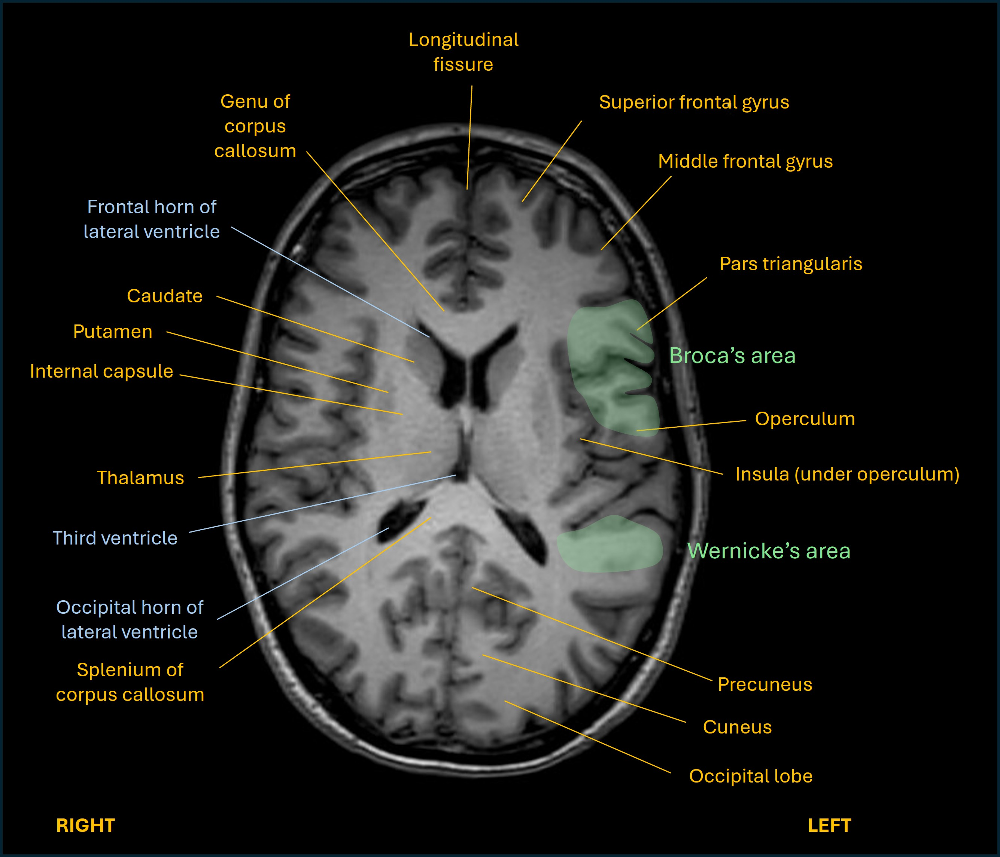
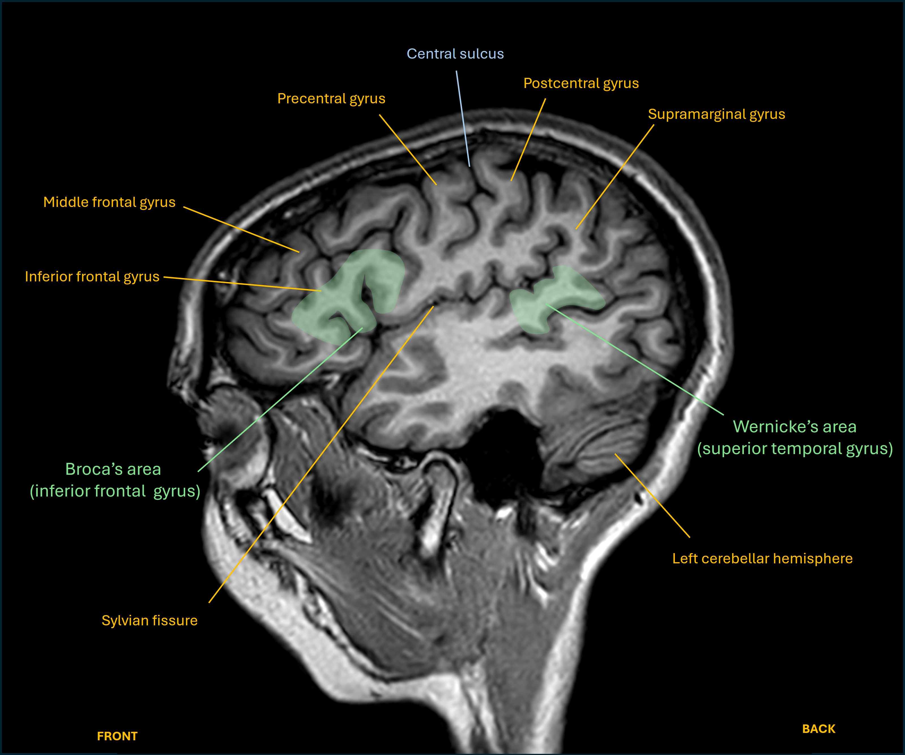
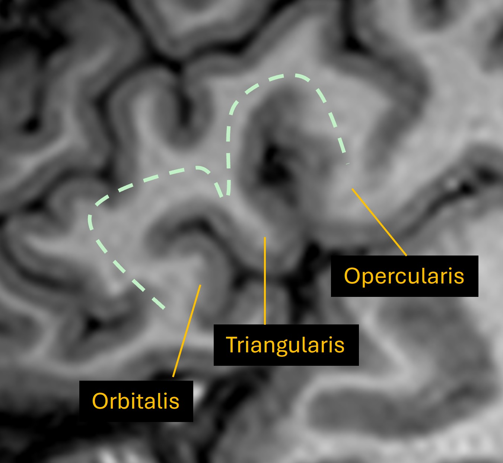
If only one of these is affected then a pure pattern arises. The first extreme is complete expressive aphasia with fully intact comprehension (Broca's aphasia) - speech is non-fluent: slow, effortful, halting, with great difficulty saying words, and visible frustration in the patient's face. The opposite is complete receptive aphasia (Wernicke's), with fluent speech containing completely nonsensical content, and the patient totally unaware of there being any issue.
Mixed types of dysphasia (dys- is used for milder forms) exist, often predominantly of one form - for example severe expressive dysphasia with ability to follow simple (1 step) but not complex (2 or 3 step) commands. These involve the connecting subcortical tracts and various patterns exist, usually with some preserved abilities and incomplete disruption of others.
In our case, the patient can't express herself - we only tested spoken language, but she can still make sounds so is not totally mute (or unconscious), and we are assuming this is aphasia rather than anarthria. She also cannot understand anything we ask - even simple 1-step verbal commands - which makes the assessment difficult - we have no history from her, and she can't perform many of our tests (e.g. sensation, or coordination with the non-paralysed side). There is combined expressive and receptive aphasia.
Mixed types of dysphasia (dys- is used for milder forms) exist, often predominantly of one form - for example severe expressive dysphasia with ability to follow simple but not complex commands. Often these involve the connecting subcortical tracts and various patterns exist, usually with some preserved abilities rather than a global loss of language.
Here, the complete failure of both arms suggests a large lesion involving both cortical language centres.
2. Hemiplegia and facial weaknessBoth right limbs are paralysed as is the right face. The precise term for this is facio-brachio-cural paralysis, though this term is not often used. Hemiplegia is used often, but hemiplegia doesn't have to include the face. We can just say 'hemiplegia and facial weakness'.
This can happen with a lesion affecting the corticospinal and corticobulbar tracts anywhere from the motor cortex to the pons, but not lower - as the facial fibres do not descend further.
The pathway starts in the motor cortex (precentral gyrus), shown on an axial MRI below:
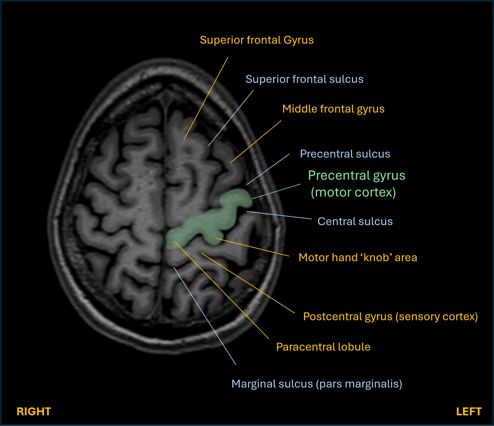
This is organised somatotopically - different areas for different body parts - with the leg areas most medial, then arm, then hand, and the face and mouth parts most laterally. They give off corticospinal (limbs) and corticobulbar (face/mouth) fibres which descend as the corona radiata. They converge subcortically, rotating 90°, then pass through the posterior limb of the internal capsule. Then they descend to the midbrain and rotate another 90° so they are arranged medial (face/mouth) to lateral (arm then leg), 180° from the order they were in the cortex.
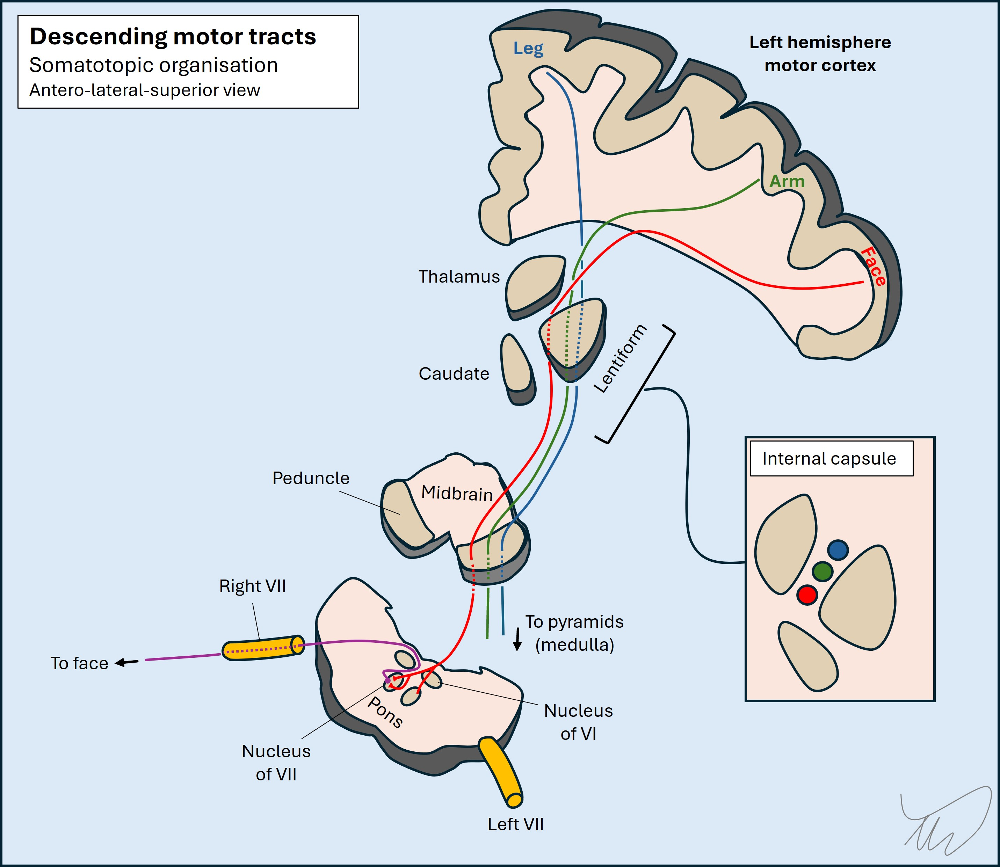
In the pons they then separate.
The UMN corticobulbar fibres supply the facial nuclei, which has different parts. Those for the upper half of the face (forehead, eye closure) receive UMN input from both hemispheres, whereas those for the lower half of the face only receive UMN fibres from the contralateral brain. This is why unilateral brain lesions produce contralateral paralysis of the lower half of the face but spare the upper half.
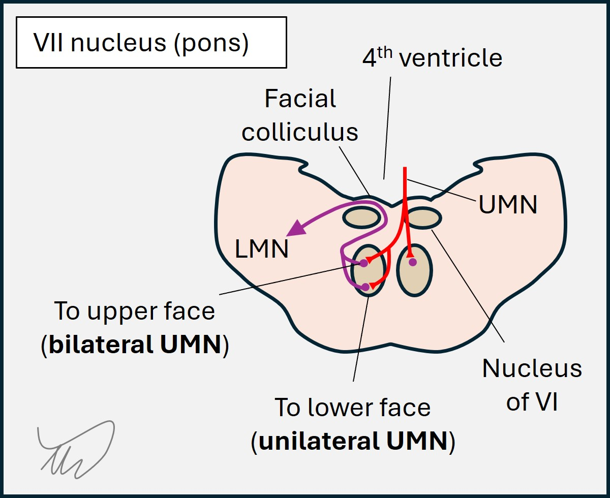
The corticospinal fibres continue descending in the pons and through the medulla, eventually crossing in the pyramids (lower medulla) then travelling in the spinal cord.
The weakness here includes face (UMN pattern), arm and leg, so the lesion must be at the pons or higher. Given what we already know about the language centres involved, we are dealing with a lesion fairly high up the tract - perhaps including the cortex, though if this affects the entire precentral gyrus, including the leg areas in the medial aspects, it is very large. It's more likely that the lesion catches all the fibres as they descend subcortically - corona radiata and perhaps internal capsule - even if it does also involve some of the cortex above.
3. Homonymous hemianopiaBoth eyes take information from both sides of the world.
Information from the right side - the right eye's temporal field and left eye's nasal field - ends up travelling on the left aspects of both optic nerves then through the chiasm. Here the right eye temporal field fibres cross, joining the left eye nasal field fibres, and then they travel back to the brain in the left optic tract, eventually reaching the lateral geniculate nucleus (LGN) in the thalamus, where they synapse. In short, both eyes' right-sided vision ends up in the left LGN.
The post-synaptic fibres then separate. Those from the interior right quadrant of vision travel through the parietal lobe in the superior radiation, and those from the superior right quadrant travel through the temporal lobe in the inferior radiation (Meyer's loop).
They then converge on the occipital lobe's primary visual cortex either side of the calcarine sulcus - the superior radiation goes to the part above the sulcus, an the inferior radiation to the part below it. The macular (central) fibres go to the occipital pole while the more peripheral parts of vision are distributed more anteriorly.

They then converge on the occipital lobe's primary visual cortex either side of the calcarine sulcus, on the medial surface of the left hemisphere. The superior radiation goes to the part above the sulcus (cuneus), an the inferior radiation to the part below it (lingual gyrus). The fibres which represent the few degrees of central vision from the macula go to the occipital pole, while the more peripheral parts of vision are distributed more anteriorly.
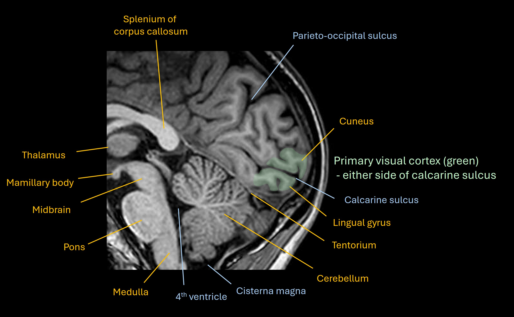
The macular part has special qualities, because lesions of unilateral occipital cortex spare the macular part of vision despite producing homonymous visual field defects. This seems surprising as it is represented at the pole - so why should a lesion not affect macular vision?
The reason why is debated. One theory is that there is blood supply to the macular region from both the posterior cerebral artery (PCA) and middle cerebral artery (MCA), so a PCA infarction spares the macula. This wouldn't explain why macular sparing is seen in non-vascular lesions such as tumours and traumatic damage. Another theory is that both hemispheres have bilateral macular representation, so there is 'back-up' in the right hemisphere. There are some arguments against this. Whatever the reason - unilateral visual cortex lesions produce contralatearl homonymous field defects with macular sparing.
Field defects happen anywhere from eye to cortex, and the pattern varies and allows localisation, as shown below.
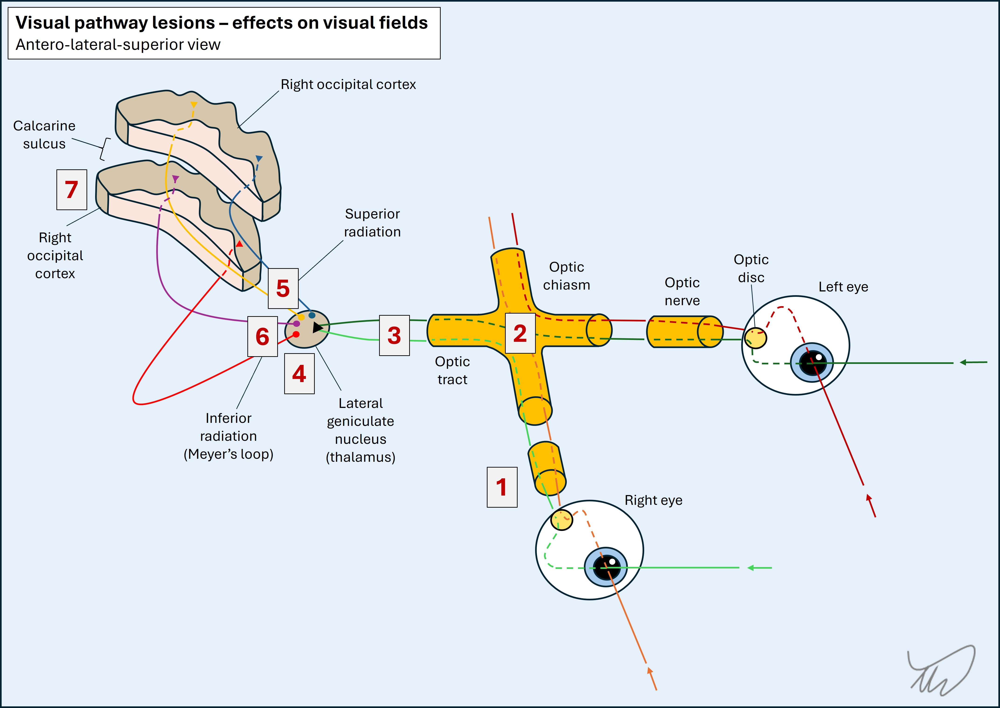
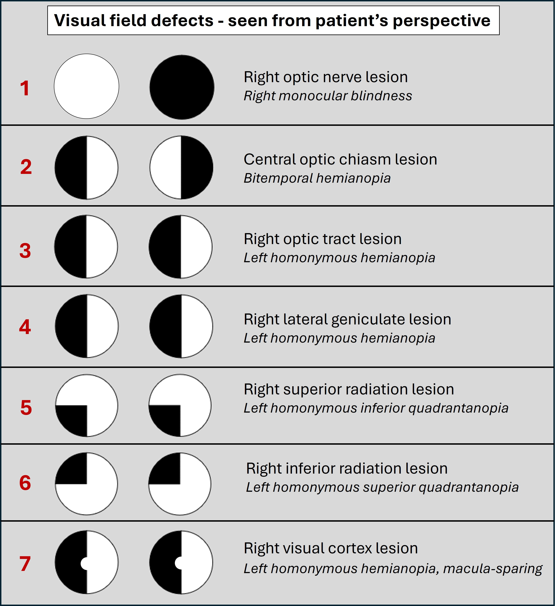
A right homonymous hemianopia, as seen in this patient, could be from damage to the optic tract, LGN, both radiations, or the cortex - and the patient isn't able to communicate enough for us to examine in more depth and check for macular sparing.
However, given the language and motor functions we've already covered, this lesion is unlikely to be as far back as the occipital cortex, so is more likely to affect the system further forward - whether at the the tract, LGN, or both radiations.
4. Leftward eye deviationThis is a helpful feature for localisation.
Conjugate horizontal eye movement requires input from the brain via the brainstem gaze centres to the muscles involved in eye movement. Problems at various sites can lead to fixed lateral gaze deviation - but we know we are dealing with a brain lesion.
While visual inattention (neglect) can lead to a tendency to 'ignore' information on one side of world, and can look similar, in that situation the patient tends to look around, just not past the midline, favouring stimuli from one side. Here the gaze is fixed to the side. This is due to involvement of the frontal eye field (FEF) in the left frontal lobe - at the junction between the precentral gyrus (motor strip) and middle frontal gyrus.
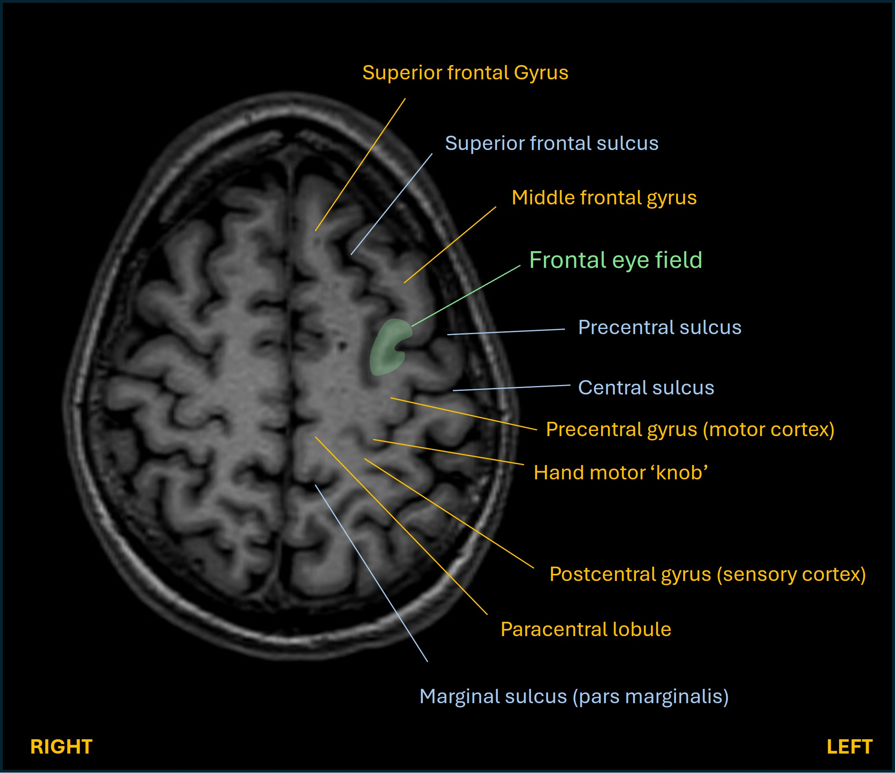
The FEF's role is to push both eyes to the opposite (right) side. Normal resting eye position ('primary position') results from tonic activity in both FEFs, with equal and opposite forces keeping the eyes central. To move the eyes rightward, the left FEFs are activated. A left FEF lesion leads to tonic push towards the lesioned left side by the intact right hemisphere’s FEF.
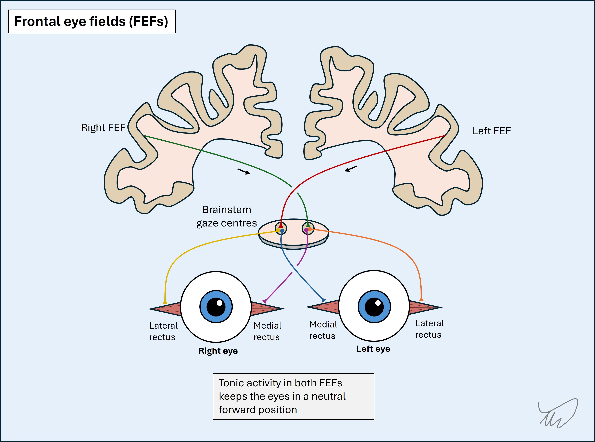
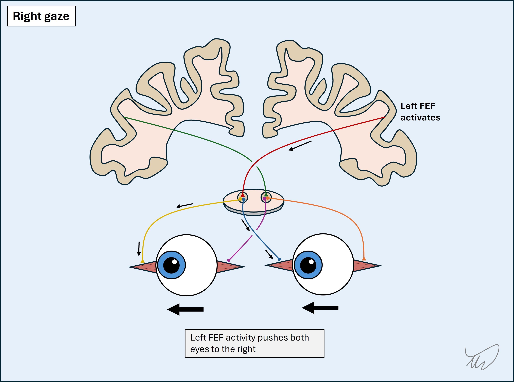
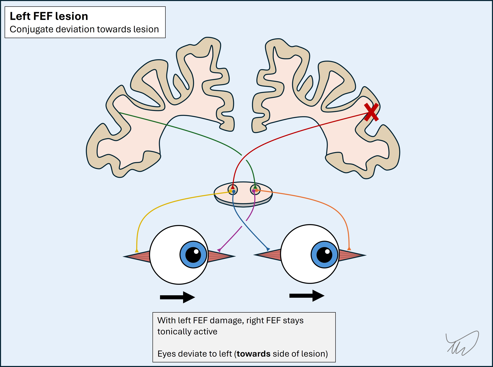
This eye deviation is a bedside sign, but it can also often be seen on brain imaging as an additional clue to a lesion involving the FEFs - known as Prevost's sign.
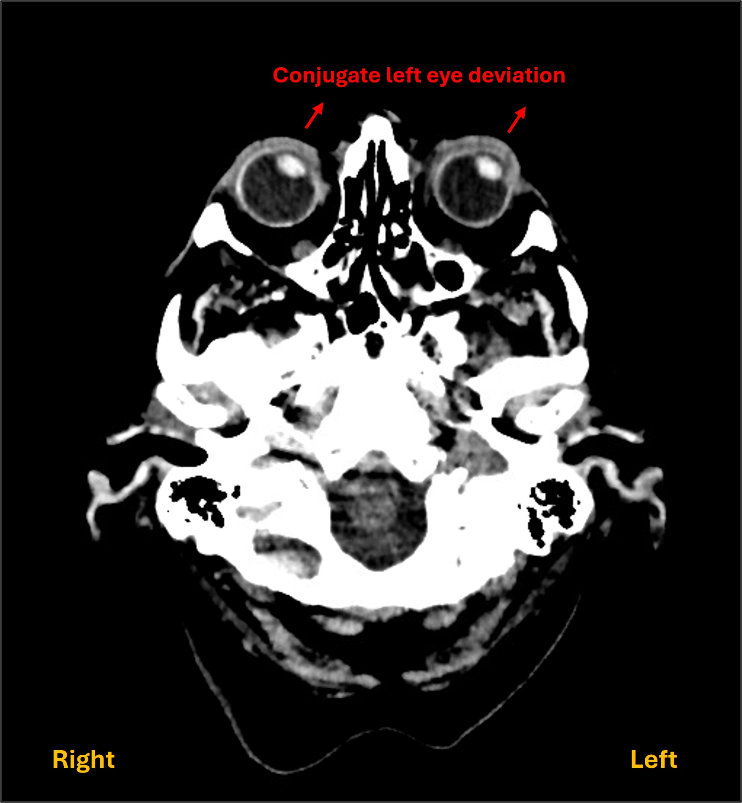
Of note, the opposite happens with a left frontal lobe seizure involving the FEF - the FEF becomes over-active, pushing the eyes rightward. This is an example of an irritative lesion - in which excess activity is triggered. However, in our case, we know already there is left hemispheric damage from other features - so we are dealing with a left FEF destructive lesion.
Summary - where is the lesion?Putting all this together we are dealing with a large left hemsiphere lesion involving:
This suggests a large lesion involving frontal, parietal and temporal lobes, including areas of cortex - affecting multiple vital structures. We now need to think of what this lesion is - and quickly.
What is the lesion?